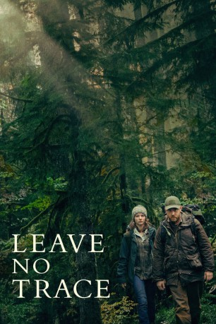

#10506 Leave No Trace
 gesehen am 19.01.2019
gesehen am 19.01.2019
 
 IMDB-Wertung: 7.2 / 10
IMDB-Wertung: 7.2 / 10  Tomatometer: 100
Tomatometer: 100  Metascore: 88
Metascore: 88 
Die jugendliche Tom (Thomasin Harcourt McKenzie) und ihr Vater Will (Ben Foster), Kriegsveteran, leben seit vielen Jahren unentdeckt in Forest Park, einem riesigen Waldgebiet am Rande von Portland, Oregon. Eine zufällige Begegnung führt zu ihrer Entdeckung und zur Betreuung durch die Sozialbehörde. Sie versuchen sich an ihre neue Umgebung anzupassen, bis eine unerwartete Entscheidung sie auf einen gefährlichen Weg zurück in die Wildnis führt – und sie zwingt, sich mit dem widerstreitenden Wunsch, Teil der Gesellschaft zu sein und dem heftigen Verlangen, abseits zu leben, auseinandersetzen zu müssen.
Jahr: 2018
Dauer: 109 Minuten
FSK: 6
Land: USA Studio: Bleecker Street MediaTonspuren: DD5.1 - ,
Untertitel: Englisch,
Auflösung: 1080p (1920x1040) Größe: 9297 MB
Genre: Drama
Regisseur: Debra Granik
Drehbuch: Debra Granik, Anne Rosellini, Peter Rock
Soundtrack: Dickon Hinchliffe
Darsteller:
- Thomasin McKenzie als Tom
 Ben Foster als Will
Ben Foster als Will- Michael Draper als Runner
- Peter Simpson als Police Officer
- Dana Millican als Jean
 Jeff Kober als Mr. Walters
Jeff Kober als Mr. Walters- Spencer S. Hanley als Pastor
- Isaiah Stone als Isaiah
 Dale Dickey als Dale
Dale Dickey als Dale- Stephanie Barton-Farcas als Police Woman (uncredited)
 Ayanna Berkshire als Dr. Berkshire (uncredited)
Ayanna Berkshire als Dr. Berkshire (uncredited)- Peter James DeLuca als Church Patron #1 (uncredited)
 P.E. Ingraham als Church Goer (uncredited)
P.E. Ingraham als Church Goer (uncredited)- Lane Stiemsma als Church Patron (uncredited)
- Jeffery Rifflard als Vet at VA
- Derek John Drescher als Larry
- Erik McGlothlin als K-9 Officer
- Alyssa McKay als Valerie
- Ryan Joiner als Tiffany
- Michael J. Prosser als James
- Tamera Westlake als Devotional Dancer
- Bob Werfelman als Bob
- Jacob Johnson als 4H Coach
- Art Hickman als Truck Driver
- Derek Carmon als Detective
- Zoë Dotson als Teen Girl Traveler
- David M. Pittman als Blane
- Susan Chernak McElroy als Susan
- Marisa Anderson als Musician at Party
- Michael Hurley als Musician at Party
- Evan Brown als Bus Rider (uncredited)
- Zack I. Ford als Church Goer (uncredited)
- Mike Harris als Bus Rider (uncredited)
- Sabina Mach als (uncredited)
- Eric Sahlstrom als Church Goer (uncredited)
- River K. Spencer als Church Goer (uncredited)
- Kyle Stoltz als Church Goer / C-Store Patron / Security Guard (uncredited)
- Tamara Szalewski als Pedestrian (uncredited)
Datei: X:\2018(G-M)\Leave No Trace (2018, FSK6, 1920x1040).mkv seit 16.01.2019
Festplatte: HD 2018(G-Z)-2019(A-Z)
 Es gibt insgesamt 138 Filme in der Gruppe '2018(G-M)'
Es gibt insgesamt 138 Filme in der Gruppe '2018(G-M)'